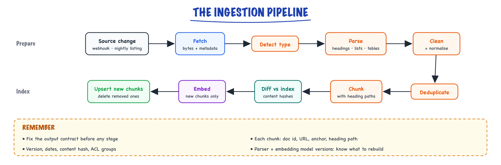

Document ingestion // Knowledge & RAG
Parsing PDFs and HTML, OCR, deduplication and keeping the index fresh.
01 — At a glance
Parse, OCR, dedupe, chunk, embed, and index at scale. Ingest is 80% of RAG quality — garbage in, hallucination out.

Document ingestion pipeline: sources (S3, Confluence, Slack) → Kafka queue → parser workers → dedup by content_hash → chunker → embed GPU pool → dual-write indexes + metadata DB.
02 — New words
| Word | Meaning |
|---|---|
| Ingestion pipeline | The offline process that turns source documents into indexed chunks: fetch, parse, clean, deduplicate, chunk, embed, store. |
| Text layer | The machine-readable characters inside a PDF. Scanned PDFs have none; they are only pictures of text. |
| Reading order | The order a person reads a page in. A PDF stores drawing order, which can differ (columns, sidebars, footers). |
| OCR | Optical character recognition: reading text from an image of a page. |
| Boilerplate | Text repeated on every page or screen that is not content: navigation menus, cookie banners, running headers, page numbers. |
| Unicode normalisation (NFKC) | Rewriting characters that look alike but are encoded differently (ligatures, non-breaking spaces, full-width digits) into one standard form. |
| Content hash | A fingerprint (such as SHA-256) of normalised text. Same text, same hash; any change, a different hash. |
| Shingles | All runs of \(n\) consecutive words in a text. Two texts sharing most shingles are near-duplicates. |
| Jaccard similarity | Size of the overlap of two sets divided by the size of their union: 1 for identical sets, 0 for disjoint ones. |
| MinHash | A compact signature (say 128 numbers) per document whose agreement rate estimates Jaccard similarity without comparing full shingle sets. |
| Provenance | Where a chunk came from: source URL, document ID, section anchor, version and date. Needed for citations and debugging. |
| ACL | Access control list: which users or groups may see a document. Carried onto every chunk and enforced at retrieval time. |
| Idempotent | Safe to run twice: processing the same document again leaves the index exactly as it was. |
The lesson
03 — The question
Every RAG demo starts from clean text. Real knowledge lives in PDFs with two columns and page numbers, HTML pages wrapped in navigation menus, scanned contracts, wiki pages copied into three spaces, and documents edited every day. Whatever the parser gets wrong is wrong in the index forever: a table flattened into a stream of numbers, a footer embedded into every chunk, last year's policy sitting next to this year's. Teams that measure where their RAG errors come from usually find a large share starting here, before any model runs.
Interviewers ask:
- Walk me through your ingestion pipeline. What can go wrong at each stage?
- How do you handle PDFs, scans, tables and duplicates?
- How do you keep the index fresh when documents change or are deleted, without re-embedding everything?
- Where do permissions live?
The running example is the course's support assistant. Its 1,200 source documents are 800 Markdown pages exported from a wiki, 300 HTML help-centre pages, and 100 PDFs (plan sheets and contracts), 15 of them scanned. Documents change daily; an edit to the refund policy should be answerable within minutes, and a deleted page must stop being cited at once. We will follow one document, the refund policy (about 1,800 tokens, six chunks once indexed), through the pipeline: first as the PDF export customers download, which is where parsing goes wrong (Step 2), and later as the wiki page it is exported from, when someone edits it (the worked example).
04 — Step 1: the pipeline and its output contract
Ingestion is a chain of stages, each with one job:

Ingestion is a chain of stages with one job each, from a source change to an updated index; the diff against content hashes means only new chunks are embedded and removed chunks are deleted.
Before building any stage, fix what comes out the end. Every chunk in the index carries:
| Field | Why |
|---|---|
| Chunk text and the text actually embedded | They differ when the heading path is prepended. |
| Document ID, source URL, section anchor | Citations that link to the exact place; deletion by document. |
| Heading path, title, document type, language, product | Context for the model, and filters for retrieval. |
| Document version, last modified, ingested at | Prefer newer versions; measure freshness. |
| Content hash of the chunk | Skip unchanged chunks on re-ingestion. |
| ACL groups | Enforce permissions in the retrieval query. |
| Parser and embedding model versions | Know what to rebuild when either changes. |
The point of the contract is that everything downstream (retrieval filters, citations, freshness checks, rebuilds) depends on these fields, and they are cheap to capture at ingestion and expensive or impossible to reconstruct later.
05 — Step 2: why PDFs are hard
A PDF is not a document format in the sense a Markdown file is. It is a program that draws a page: "use this font at this size, put these characters at coordinates (50, 120)". It has no paragraphs, no headings and no reading order, only glyphs at positions, emitted in whatever order the generating software chose.
Take our refund policy as a two-page, two-column PDF whose generator drew the page line by line across both columns, footer first. The text layer, read in stored order, comes out as:
Page 1 of 2 Acme Help Centre - Billing Refund policy Annual plans are refundable in Enterprise customers on annual full within 30 days of purchase. contracts may request a prorated After 30 days the plan stays refund within 60 days of the active until the end of the term. renewal date.
Every word is present and the text is useless. The two columns are interleaved, so the general rule and the enterprise exception are braided together; the footer and running header would be embedded into every chunk; and nothing marks "Refund policy" as a heading. The same thing happens, in subtler ways, with sidebars, multi-column contracts and footnotes.
A layout-aware parser rebuilds the structure from geometry, using information the text layer does keep: each line's position and font size.
- Remove running headers and footers: lines that repeat on most pages, after masking digits so "Page 1 of 2" and "Page 2 of 2" count as the same line.
- Restore reading order: assign lines to columns by their horizontal position, then read each column top to bottom.
- Recover headings: lines in a noticeably larger font than the body text (say 1.3 times or more) become headings, with level by size.
Applied to our PDF, the output becomes a clean Markdown document: "# Refund policy", the annual-plans paragraph, the enterprise paragraph, then "## How to request a refund". That is input the chunker in chunking can split by section. The code at the end of this lesson does exactly these three steps.
Real layouts are messier than this toy, so production systems usually rely on a dedicated layout parser (rule-based libraries, or layout-detection models that label regions as title, paragraph, table, figure). The engineering habit that matters more than the tool: look at the parsed output of a sample of every document type before indexing, because parse failures are silent.
06 — Step 3: tables, scans and OCR
Tables carry the facts users ask about most (prices, limits, plan features) and are the content naive extraction destroys most thoroughly: a 4 × 6 pricing table becomes 24 numbers in a row with no idea which column each belongs to. Extract tables as tables (layout parsers detect them; HTML and Markdown tables are explicit), then serialise them in a form that keeps the header with every value: Markdown table text, or one line per row such as "Plan: Pro | Seats: 25 | Monthly price: 49". Store the table's caption and heading path with it.
Scanned PDFs have no text layer at all, so text extraction returns almost nothing. Detect this per page: if a page yields fewer than about 50 characters but contains an image covering most of it, send it to OCR. Ingestion must check this explicitly, because a scanned contract otherwise enters the index as an empty document and simply never matches anything.
OCR has its own error profile, and it lands on the content RAG cares about. It confuses 0 and O, 1 and l, 5 and S; it drops decimal points; it misreads small fonts and stamps. "Plan code P10-OS" read as "PIO-0S" will never match a query for the code. Mitigations: keep the OCR engine's per-word confidence and flag low-confidence pages for review; run a spell or dictionary check on identifiers; and for high-value documents, use a vision-language model to transcribe complex pages (tables, forms) into Markdown, at a cost per page that is orders of magnitude above plain text extraction. For our 15 scanned contracts, that cost is trivial; for a million scanned pages it is the main budget line.
07 — Step 4: HTML and cleaning
HTML has the opposite problem from PDF: structure is explicit (h1 to h6, ul, table) but buried in boilerplate. A help-centre page typically contains its article inside a page shell of navigation, related-article lists, cookie notices and a footer, often with more boilerplate words than article words. Embedded naively, every chunk of every page carries the same menu text, which makes unrelated pages look similar to each other.
The fix is to extract the main content element (the article body, found by a known CSS selector for your own site, or by a content-extraction heuristic for arbitrary pages), then convert its tags to Markdown so headings, lists and tables survive into chunking.
After parsing, every document type goes through the same normalisation:
- Unicode NFKC: turns the ligature "fi" (one character) into "f" + "i", non-breaking spaces into spaces, full-width digits into ASCII digits. Without it, "fine print" and "fine print" are different strings to a keyword index and a content hash.
- De-hyphenation: PDFs break "refund-" / "able" across lines; re-join word fragments split by a hyphen at a line end.
- Whitespace: collapse runs of spaces and blank lines.
- Remove what is left of boilerplate: cookie text, "Was this article helpful?", share buttons.
Normalise before hashing (Step 6): otherwise a change in whitespace or a re-export with different line endings looks like a content change and triggers pointless re-embedding.
08 — Step 5: duplicates and near-duplicates
Knowledge bases are full of copies: a policy pasted into three wiki spaces, a page exported to PDF and also kept as HTML, the 2024 and 2025 versions side by side. Duplicates hurt retrieval directly: the top 5 results become three copies of one passage, crowding out the other two passages the model needed.
Exact duplicates are easy: equal content hashes after normalisation. Keep one, record the others as aliases (so permissions and links from every copy still work).
Near-duplicates differ by a date, a footer or one sentence. Compare their 5-word shingles with Jaccard similarity. Take a 52-word paragraph of the refund policy and a copy in another space where one fact changed, "60 days" to "90 days". Each text has 48 shingles; changing one word changes the 5 shingles that contain it, so they share 43 of 53 distinct shingles: Jaccard = 43/53 = 0.811. A password-reset paragraph shares none: Jaccard 0.000.
Comparing shingle sets for every pair of documents is quadratic. MinHash fixes that: hash every shingle with 128 different hash functions and keep, for each function, the minimum value. The probability that two documents share the same minimum for one function equals their Jaccard similarity, so the fraction of the 128 positions that agree estimates it: 0.828 for our pair (true value 0.811). Locality-sensitive hashing then groups signatures into buckets so only likely pairs are compared at all.
Near-duplicates may disagree. Our two "duplicates" differ in exactly the fact a customer will ask about: 60 days or 90? Deleting one at random can keep the wrong one. Resolve near-duplicate clusters by authority and recency (the canonical space, the newest version), mark superseded versions in metadata, and route genuine conflicts to the content owners. Retrieval should prefer current versions explicitly, via a filter or a score boost.
09 — Step 6: keeping the index fresh without re-embedding everything
The naive refresh is "re-ingest everything nightly". For our corpus that is 30,000 chunks, cheap in embedding fees but slow, wasteful, and too late for a policy edited at 10am. The better design is incremental, driven by content hashes at two levels:
- Document level. When a source reports a change (a webhook from the wiki, or a nightly listing compared with the last), fetch the document and hash its normalised text. Same hash as last time: stop. A re-save without edits costs nothing.
- Chunk level. If the document changed, re-chunk it and hash each chunk. Compare with the chunk hashes stored for this document: embed and insert only new hashes, delete only hashes that disappeared, leave the rest alone.
When the refund policy's enterprise window changes from 60 to 90 days, the chunk diff finds one new chunk and one removed chunk; the other chunks are untouched. Suppose 2% of documents change on a typical day: 24 documents. Re-embedding all their chunks would be about 600 chunks; with chunk-level diffing, if an edit touches one or two sections, it is closer to 50. The saving in money is small at this scale; the saving in index churn, tombstones (see vector search) and risk is not.
Deletes need their own path, because a deleted source sends no new content. Detect them by listing the source and comparing with the documents you hold, or from delete webhooks, and remove every chunk of the document by its document ID. A deleted page that keeps being cited is a correctness and compliance failure, not just staleness.
Idempotency makes all of this safe to retry. Give chunks deterministic IDs (for example, document ID plus chunk hash), and write with upserts. Processing the same document version twice then produces the same IDs and the same rows, so a worker that crashes halfway can simply run again.
Some changes force a full rebuild: a new parser version (every chunk may change), a new chunking strategy, or a new embedding model. Build into a new index alongside the live one, evaluate, then switch, as described in choosing an embedding model.
10 — Step 7: permissions belong in the index
Some help-centre pages are for enterprise admins only; internal runbooks are for support staff. If retrieval can return a chunk, the model can quote it, and no instruction in a prompt reliably prevents that. So permissions are enforced at retrieval, as a filter:
- At ingestion, copy the source document's ACL (the groups allowed to read it) onto every chunk.
- At query time, the application resolves the user's groups and adds them to the retrieval filter: only chunks whose ACL intersects the user's groups can be returned.
- When a document's permissions change, that is an update like any other: re-write the ACL field on its chunks, no re-embedding needed.
Two practical wrinkles: permission changes must propagate as quickly as content changes (a revoked page is a security issue), and per-user filters are often highly selective, which brings in the filtered-search behaviour covered in vector search. More on access control in security.
11 — Step 8: running it reliably
An ingestion pipeline is a batch and streaming system like any other, and fails like one. The standard shape:
- One message per document on a queue, so a slow or broken document does not block others, and work spreads across workers.
- Retries with backoff for transient failures (fetch timeouts, embedding API rate limits), and a dead-letter queue for documents that fail repeatedly, with the error, for a human to look at.
- Batching embedding calls: 30,000 chunks in batches of 100 is 300 requests, well inside typical rate limits; a backfill of millions needs a planned rate.
- Separate backfill and live paths, so re-indexing the whole corpus does not delay the policy edit a customer is waiting on.
And because parse failures are silent, the pipeline needs content metrics, not just error counts: characters extracted per page by document type (a sudden drop means a parser broke or scans arrived), the share of documents with zero chunks, the chunk-size distribution, the duplicate rate, and the freshness lag from source edit to searchable chunk. Alert on changes in these, the way you would alert on error rates.
12 — A worked example: one edit, end to end
- 10:02:00. A billing manager changes the enterprise refund window from 60 to 90 days in the wiki. The wiki fires a webhook; the pipeline enqueues the document ID.
- A worker fetches the page, converts it to Markdown, normalises it, and hashes it: the hash differs from the stored one, so it continues.
- It re-chunks the page into its six chunks with heading paths, hashes them, and compares with the six stored hashes: five match, one is new (the enterprise section with "90 days"), one is gone (the one with "60 days").
- It embeds the one new chunk (one API call, tens of milliseconds), upserts it with its metadata and ACL, and deletes the old chunk by ID.
- The vector store makes the write searchable within about a second. By 10:02:05, "Can enterprise customers get a refund after 30 days?" retrieves "90 days".
- That night, the near-duplicate job finds the old copy of the policy in another wiki space, now at Jaccard 0.81 with a conflicting number (the case worked in Step 5), and flags it to the content owner instead of letting both sit in the index.
13 — In code: parsing a two-column PDF, then hashing and deduplicating
The PDF part uses PyMuPDF (fitz), which is installed in the course sandbox. It builds the two-column PDF from Step 2, shows the naive text layer, then rebuilds structure from positions and font sizes:
import re from collections import Counter import fitz # PyMuPDF # build a 2-page, two-column PDF drawn line by line across columns, footer first doc = fitz.open() left = ["Annual plans are refundable in", "full within 30 days of purchase.", "After 30 days the plan stays", "active until the end of the term."] right = ["Enterprise customers on annual", "contracts may request a prorated", "refund within 60 days of the", "renewal date."] for pno in range(2): page = doc.new_page(width=595, height=842) page.insert_text((270, 820), f"Page {pno + 1} of 2", fontsize=8) page.insert_text((50, 30), "Acme Help Centre - Billing", fontsize=8) if pno == 0: page.insert_text((50, 80), "Refund policy", fontsize=20) for i, (l, r) in enumerate(zip(left, right)): page.insert_text((50, 120 + 14 * i), l, fontsize=10) page.insert_text((310, 120 + 14 * i), r, fontsize=10) else: page.insert_text((50, 80), "How to request a refund", fontsize=14) page.insert_text((50, 110), "Open Billing and choose the invoice.", fontsize=10) pdf = fitz.open(stream=doc.tobytes(), filetype="pdf") print("NAIVE page 1:\n" + pdf[0].get_text()) lines = [] # (page, x, y, font size, text) for every line for page in pdf: for block in page.get_text("dict")["blocks"]: for ln in block.get("lines", []): text = "".join(s["text"] for s in ln["spans"]).strip() size = max(s["size"] for s in ln["spans"]) lines.append((page.number, ln["bbox"][0], ln["bbox"][1], size, text)) # 1. drop running headers/footers: same text (digits masked) on most pages mask = lambda t: re.sub(r"\d+", "#", t) pages_with = Counter(m for _, m in {(p, mask(t)) for p, _, _, _, t in lines}) lines = [l for l in lines if pages_with[mask(l[4])] < max(2, 0.6 * len(pdf))] # 2. reading order: page, then column (left half first), then top to bottom lines.sort(key=lambda l: (l[0], l[1] >= 595 / 2, l[2])) # 3. headings: noticeably larger than the most common (body) font size body = Counter(round(l[3]) for l in lines).most_common(1)[0][0] out = [] for _, _, _, size, text in lines: if size >= 1.3 * body: out.append("\n" + ("# " if size >= 1.8 * body else "## ") + text) else: out.append(text) print("STRUCTURED:\n" + "\n".join(out).strip())
Normalisation, near-duplicate detection and the chunk-level diff from Steps 4 to 6, in the standard library only:
import hashlib, random, re, unicodedata def normalise(text): text = unicodedata.normalize("NFKC", text) # ligatures, odd spaces, full-width chars text = re.sub(r"(\w)-\n(\w)", r"\1\2", text) # re-join words hyphenated at line ends text = re.sub(r"[ \t]+", " ", text) # collapse spaces return re.sub(r"\n{3,}", "\n\n", text).strip() print(repr(normalise("Annual plans are re-\nfundable within 30 days; see the fine print."))) def shingles(text, n=5): w = re.findall(r"\w+", text.lower()) return {" ".join(w[i:i + n]) for i in range(len(w) - n + 1)} def jaccard(a, b): return len(a & b) / len(a | b) def minhash(sh, k=128, seed=0): rnd = random.Random(seed) salts = [rnd.getrandbits(64).to_bytes(8, "big") for _ in range(k)] return [min(int.from_bytes(hashlib.blake2b(s.encode(), key=salt, digest_size=8).digest(), "big") for s in sh) for salt in salts] A = ("Annual plans are refundable in full within 30 days of purchase. After 30 days the plan stays active " "until the end of the term and is not refunded. Enterprise customers on annual contracts may request a " "prorated refund within 60 days of the renewal date. Refunds go to the original payment method.") B = A.replace("60 days", "90 days") # a copy elsewhere, one fact changed C = "To reset your password, open Settings and choose Security. You will receive a link by email within five minutes." sA, sB, sC = shingles(A), shingles(B), shingles(C) agree = lambda x, y: sum(a == b for a, b in zip(x, y)) / len(x) print("Jaccard A,B %.3f A,C %.3f" % (jaccard(sA, sB), jaccard(sA, sC))) # 0.811 0.000 print("MinHash A,B %.3f A,C %.3f" % (agree(minhash(sA), minhash(sB)), agree(minhash(sA), minhash(sC)))) def chunk_hash(text): return hashlib.sha256(normalise(text).encode()).hexdigest()[:16] stored = {chunk_hash(t): t for t in ["Annual plans are refundable within 30 days.", "Enterprise: prorated refund within 60 days.", "Open Billing to request a refund."]} fresh = {chunk_hash(t): t for t in ["Annual plans are refundable within 30 days.", "Enterprise: prorated refund within 90 days.", "Open Billing to request a refund."]} print("embed:", [fresh[h] for h in fresh.keys() - stored.keys()]) print("delete:", [stored[h] for h in stored.keys() - fresh.keys()]) print("unchanged:", len(fresh.keys() & stored.keys()))
Quick reference
14 — What & Why
RAG quality ceiling is set at ingest. Parsing failures, bad OCR, and stale indexes cause retrieval misses before the query path runs.
15 — Core Concepts
| Term | Definition | Gotcha |
|---|---|---|
| CDC | Change data capture from sources | Miss deletes without webhooks |
| content_hash | SHA256 of normalized text | Skip re-embed if unchanged |
| Near-line | Minutes freshness via streaming ingest | Higher cost than batch |
16 — API Surface
POST /v1/documents { source_url, org_id, metadata }
-> 202 { job_id, status: "QUEUED" }
GET /v1/documents/{doc_id} -> { status, chunk_count, content_hash }
DELETE /v1/documents/{doc_id} -> 204 tombstone17 — When to Use / When NOT
| Mode | Use When | Skip When |
|---|---|---|
| Batch nightly | Stable docs, cost-sensitive | Need minute freshness |
| Near-line CDC | Confluence/Notion live sync | Static PDF archive |
18 — Architecture
Sources -> Kafka -> Parser -> Dedup -> Chunker -> Embed -> [Vector + Sparse + Postgres meta]
19 — Deep Dive: Parsing & OCR

Parser routing: PDF to OCR/unstructured, HTML to trafilatura, Slack JSON to thread builder
Unstructured, Docling, Tesseract OCR. Preserve tables. Strip boilerplate nav/footer.
20 — Deep Dive: Dedup & CDC
- Dedup: hash each document's normalized content. If the hash is unchanged since the last ingest, skip parsing and re-embedding entirely. Near-duplicates (MinHash/SimHash) can be collapsed too.
- Change data capture: subscribe to change webhooks from the sources (Confluence, Drive, S3 events) instead of re-crawling everything on a schedule.
- Deletes: write a tombstone when a source document is deleted, then purge its chunks from every index asynchronously. Without this, deleted content keeps being retrieved.
21 — Deep Dive: Queue Design

Kafka partitioned by org_id; consumer groups for parser, chunker, embed stages with DLQ
Kafka/SQS with DLQ. Backpressure when embed GPU saturated. Priority queue for user-triggered refresh.
22 — Deep Dive: Embed Workers
- A pool of GPU workers (or an embedding API) consumes chunks from the queue and embeds them in batches, typically a few hundred chunks per call, which is far cheaper than one call per chunk.
- Upserts are idempotent, keyed by chunk_id, so a retried batch never creates duplicates.
- Rate-limit per tenant so one large import cannot starve everyone else's freshness.
- Record the embedding model version on every chunk; changing models means re-embedding, ideally into a new index you swap in.
23 — Deep Dive: Freshness
Target: new doc searchable <5 min. Monitor ingest lag p99. Reconciliation job nightly for missed CDC events.
In production
24 — Production & Ops
- Parser failure rate by mime type dashboard
- DLQ replay tooling
- Ingest lag alerts
26 — Where people get lost
- Sync ingest blocking API
- No tombstone on delete — zombie chunks
- OCR quality ignored
- Re-embed entire corpus on 1% change
- "Parsing is a solved problem; call a library and move on." Parse failures are silent and permanent. Inspect parsed output for a sample of every document type, and monitor characters per page.
- Trusting PDF text order. It is drawing order. Columns interleave and footers land mid-text unless you rebuild reading order from positions.
- Flattening tables into text. Numbers without their column headers cannot be retrieved or interpreted. Serialise tables with headers attached.
- Letting scanned PDFs in as empty documents. Detect missing text layers per page and OCR them; watch OCR errors on identifiers.
- Deleting near-duplicates blindly. They often differ in exactly the fact users ask about. Resolve by authority and recency, and flag conflicts.
- Re-embedding everything on every change. Hash documents and chunks; embed only what changed, and handle deletes explicitly.
- Putting permissions in the prompt. Anything retrieved can be quoted. Filter by ACL in the retrieval query.
- Hashing before normalising. Whitespace and encoding noise then look like content changes and cause needless re-embedding.
27 — How this connects
Builds on
- Choosing an embedding model — Model families, dimensions, benchmarks, cost, and when to fine-tune or switch.
- Vector search & databases — Exact and approximate nearest neighbours, HNSW and IVF, and choosing a vector database.
Where this shows up later
- The RAG pipeline — Retrieve, augment, generate: every stage from a question to a grounded, cited answer.
- Chunking — Fixed, recursive, semantic, document-aware and parent-child chunking, and how to tune it.
- Reranking — Cross-encoder rerankers: retrieve wide, rescore, keep the best few.
- Making RAG good & measuring it — Advanced RAG, a production RAG chatbot design, retrieval and answer metrics, freshness, ACLs, latency, injection.
- LangChain — Chains, runnables, retrievers and the integrations layer.
- LlamaIndex — Data-first RAG framework: loaders, indexes, query engines.
- Multimodal LLMs — Vision and audio encoders, how images become tokens, and what multimodal models are good for.
- Complete build: the knowledge layer — Ingestion, chunking, indexing and retrieval for the build.